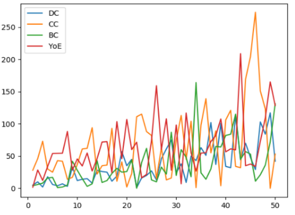

Discover influential leaders in the fields of Oncology and Immunology using our advanced AI-driven search tool. Our system employs state-of-the-art Graph Neural Networks (GNNs) to analyze complex datasets and identify individuals who are leading voices in their respective fields.
Our data source is PubMed, a free resource matained by the U.S National Library of Medicine(NLM).
Since the enture dataset is sourced from PubMed database, the attribute value for affilitated institutions is limited by the database. We have to admit, for particular expert, there might have multiple affiliated institutions that shown in PubMed, so we cannot associted with.
The identification of Key Opinion Leaders(KOLs) is based on graph theory, so we use centrality measures to access the influence of a node in the graph. The centrality measures included Degree Cenrrality(DC), Closeness Centrality(CC), Betweenness Centrality(BC), and we also add Years of experience(YOE).The final score is calculated by weighting those four indicators at a ratid of 1:1:1:0.2.
DC stands for Degree Centrality, it is defined as the number of edges conneectd to a node.
Specifically for a node v, its degree centrality CD(v) can be expressed as: CD(v)=deg(v), where dug(v) is the degree of node v.
CC stands for Closeness Centrality, is a method based on the average shortest path length from a influential in the nectwork bacause they can reach other nodes more quickly.
BC stands for Betweenness Centrality, it is a method based on the average shortest path length from a node to all other nodes. Nodes with high betweenness centrality are usually considered critical in the network because they act as bridges on many shortest paths.
YOE:Years of Experience is calculated as follows: YOE = Current Year(2024) - The year of the earliest published paper by the KOL
As shown in the below diagram, the score is determined by four indicators. Although these indicators may not be absolutely monotonic over small intervals, they are generally monotonic overall from the start point to the end.
We use the website https://findexpertmd.com/ as a baseline to test the reliability of the KOLs ranked by our method. for the different subfields, the accuracy usually ranges from 25% to 73%.
For the Subarea of low accuracy rate, we think that is due to the small size of the dataset and the limited number of the features in the data. With a robust dataset, we believe our method's accuracy would be higher.
M.R. Gotecha and M.S. Patwardhan, "Indentification of Key Opinion Leaders in Healthcare Domain Using Weighted Social Network Analysis," 2016 International Conference on Computing Communication Control and Automation(ICCUBEA), Pune, India, 2016, pp.1-6, doi: 10.1109.ICCUBEA.2016.7860000. "Graph Neural Networks for Fast Node Ranking Approximation", ACM Transctions on Knowledge Discovery from DataBolume 15Issue 5Article No.:78pp
M.R. Gotecha and M.S. Patwardhan, "Indentification of Key Opinion Leaders in Healthcare Domain Using Weighted Social Network Analysis," 2016 International Conference on Computing Communication Control and Automation(ICCUBEA), Pune, India, 2016, pp.1-6, doi: 10.1109.ICCUBEA.2016.7860000. "Graph Neural Networks for Fast Node Ranking Approximation", ACM Transctions on Knowledge Discovery from DataBolume 15Issue 5Article No.:78pp